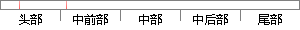

由于辐射源到两个基站的距离不同，信号传播到基站处会产生时间差；
片段位置图

相似结果|
相似片段 1：测角定位的内在统一从产生相位差和时间差的实质来看，它们均来源于由周一电磁波辐射源到达不同基站时存在不同长度的传播路径。因此测量得到的距离差和相位差反应的都是传播路径长度的差异。根据：Ar=cATab
|
※ 片段修改建议 ※
近似词参考：- 由于：因为
- 距离：间隔
- 不同：分歧 差别
- 信号：旌旗灯号
- 传播：传布 流传
- 产生：发生 孕育发生
系统自动生成语句：因为辐射源到两个基站的间隔分歧，旌旗灯号传布到基站处会发生时间差；
注：本片段修改建议为系统自动生成，仅供参考。